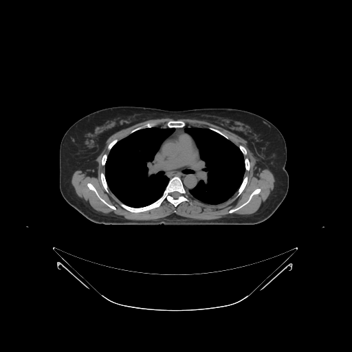
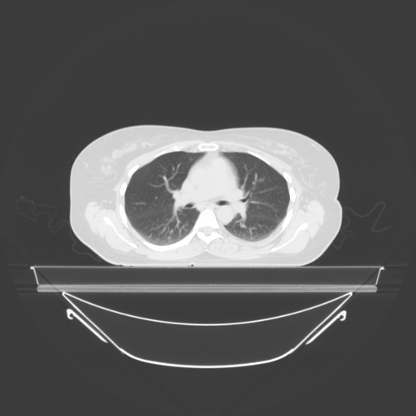
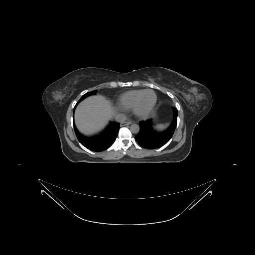
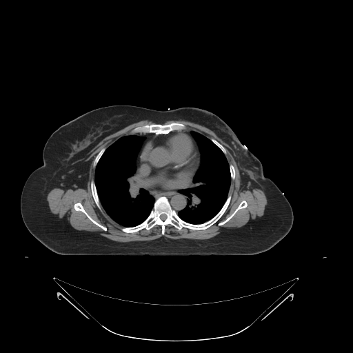

Breast planning is done on a CT simulation scan, usually with the arms up on a breast board. The relevant sectional anatomy is the chest wall and its muscular/skeletal landmarks, read on soft-tissue window with attention to the lung and heart beneath.

The defining geometry is tangential fields skimming the chest wall. How much lung (and, on the left, heart) sits under the tangent on each slice is central to both contouring and verification.
Re-windowing the mid-breast slice to a lung window makes the amount of lung under the tangent obvious — the "central lung distance" that predicts pneumonitis risk.

Why review the tangential breast field region on a lung window?
Key structures to identify on the chest wall:
| Structure | Relevance |
|---|---|
| Pectoralis major & minor | Deep border of the breast/chest-wall CTV; pec minor separates axillary node levels |
| Ribs / intercostal spaces | Skeletal reference for chest-wall depth and field borders |
| Internal mammary vessels | Run parasternally — surrogate for the internal mammary nodal chain |
| Humeral head / axilla | Regional nodal anatomy superolaterally |

Which muscle is the landmark separating the axillary lymph node levels?
After mastectomy the breast mound is gone, and the target becomes the chest wall itself — skin, subcutaneous tissue, and the pectoralis/rib surface. Bolus is often added to bring dose to the skin.

Compared with an intact breast, the post-mastectomy target is thinner and hugs the lung more closely — a demanding geometry for sparing lung while covering skin.
Comprehensive treatment may include axillary levels I–III, supraclavicular, and internal mammary nodes. OARs to recognize: ipsilateral lung, heart and LAD (left-sided), and the contralateral breast.
Cardiac proximity for left-sided treatment is why deep inspiration breath-hold (DIBH) is common: inflating the lung drops the heart away from the chest-wall tangents, visible slice-by-slice as increased heart-to-chest-wall distance.
For a left-sided breast treatment, how does DIBH reduce cardiac dose?
Breast verification balances a deformable soft-tissue target against reproducible bony references.
What technology is commonly used to monitor the breast surface and breath-hold in real time during treatment?
You've compared the intact breast and post-mastectomy chest wall on real CT, seen the same slice on soft-tissue and lung windows, identified the pectoral muscles/ribs/internal-mammary landmarks and nodal regions, and connected cardiac proximity to DIBH and SGRT verification.
Cross-reference: Breast Treatment Planning.